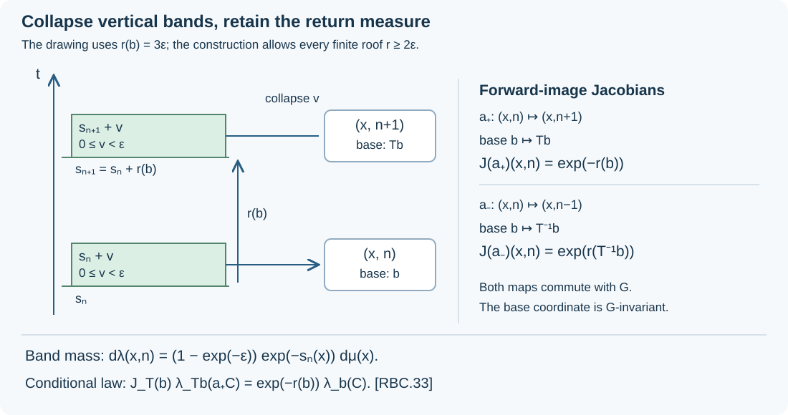

Return bands and semifinite components
A suspension model for the associated flow of a nonsingular action determines a useful countable model of its Maharam extension. Collapse a short interval after each return to the suspension base. The resulting space carries a measure-preserving action of the original group and a commuting integer shift. We construct both actions, retain the entire invariant algebra, and prove that the measure-preserving components have type II infinity when the original action has type III.
Our inputs are the full lifted-relation/core identification 1. The lifted relation and the exact core theorem, the factor-type criterion 4. The complete factor-type classification, and the continuous-core type theorem CDEC, Section 3. Conditional measures come from the complete probability and sigma-finite disintegration proofs. The finite normalization of that theorem is essential: the pushforward of the original infinite measure need not be sigma-finite.
1. Coordinates and the construction to be proved
Let a countable group \(G\) act freely and ergodically by nonsingular Borel bijections on a nonzero standard sigma-finite measure space \((X,\mu)\). Work on an invariant conull set where the action and its positive finite forward Jacobians satisfy
\[ \begin{aligned} \mu(gA)&=\int_A\Delta(g,x)\,d\mu(x),\\ \Delta(gh,x)&=\Delta(g,hx)\Delta(h,x). \end{aligned} \tag{RBC.1} \]The countable cocycle version and its null-set convention are the ones in RWT-01 and RCS-01. The Maharam space and its action are
\[ \begin{aligned} \widetilde X&=X\times\mathbb R,& d\widetilde\mu(x,t)&=e^{-t}\,d\mu(x)\,dt,\\ \widetilde g(x,t)&=(gx,t+\log\Delta(g,x)),& V_s(x,t)&=(x,t+s). \end{aligned} \tag{RBC.2} \]Changing variables in the first line gives invariance under \(\widetilde g\). The point translations \(V_s\) commute with this action. Under \(\ell=e^{-t}\), these are exactly the positive-height coordinates of RCS-01: the forward height becomes \(\ell/\Delta(g,x)\). The induced action on functions is pullback by \(V_{-s}\).
Suppose the associated measured flow has a specified suspension model over a nonsingular invertible Borel transformation \(T:B\to B\), with finite Borel roof
\[ r:B\longrightarrow[2\varepsilon,\infty),\qquad \varepsilon>0. \tag{RBC.3} \]Its space is \(\Omega=\{(b,u):0\leq u<r(b)\}\), with measure class \(\nu(db)\,du\), and its point flow \(F_s\) moves upward, identifying \((b,r(b))\) with \((Tb,0)\). Half-open intervals fix the boundary convention. All data may first be restricted to a common invariant conull version. The roof bound makes the sums of forward and backward roof lengths diverge, so \(F_s\) is defined for every real \(s\).
We will construct \(Y=X\times\mathbb Z\), a sigma-finite measure \(\lambda\), a \(G\)-action \(\widehat g\), a Borel factor map \(\pi:Y\to B\), and the shift \(a_+(x,n)=(x,n+1)\), with these properties:
- \(G\) preserves \(\lambda\), and \(G\times\mathbb Z\) acts freely.
- Pullback by \(\pi\) identifies the whole invariant algebra \(L^\infty(Y,\lambda)^G\) with \(L^\infty(B,\nu)\).
- \(\pi a_+=T\pi\), the actions commute, and the forward derivative of \(a_+\) is \(e^{-r\circ\pi}\).
- The generated principal relation is the product of the original relation with the complete relation on \(\mathbb Z\). Hyperfiniteness of the original relation passes to the \(G\)-relation on \(Y\).
- If the original relation is type III, almost every ergodic \(G\)-component on \(Y\), with its disintegrated invariant measure, is type \(\mathrm{II}_\infty\).
The conditional return identity in Section 9 records the normalization on these components. No hyperfiniteness assumption is needed for the construction or its type assertion.
2. A quotient map with exact vertical covariance
The associated-flow hypothesis gives a normal injective unital homomorphism
\[ \iota:L^\infty(\Omega)\longrightarrow L^\infty(\widetilde X) \quad\text{onto }L^\infty(\widetilde X)^G, \tag{RBC.4} \]intertwining the two flow actions. We first realize it by a Borel map \(q_0:\widetilde X\to\Omega\). Here is the point-realization argument, including its relevance to an embedding. Code \(\Omega\) Borelly as a Borel subset \(C\subset[0,1]\), using the countable separating-coordinate construction in RSY-01. Let \(c\) denote this coordinate, and represent \(\iota(c)\) by a Borel function \(f:\widetilde X\to[0,1]\). Normality and bounded Borel functional calculus give
\[ \iota(k(c))=k(f) \tag{RBC.5} \]for bounded Borel \(k\). Indeed continuous functions follow by polynomial approximation, and the class extends through bounded monotone limits, including spectral indicators. Since \(\iota(1_C(c))=1\), \(f\in C\) almost everywhere. Set \(q_0=c^{-1}f\) there, and choose an arbitrary value on the exceptional Borel null set. All bounded functions on \(\Omega\) have the form \(k(c)\), so this realizes (RBC.4) on the entire algebra. Injectivity shows that pullback preserves precisely its null classes.
For each fixed \(s\) the covariance gives \(q_0(x,t+s)=F_sq_0(x,t)\) almost everywhere, by testing a countable separating family on \(\Omega\). These exceptional sets may depend on \(s\). We now remove that dependence for vertical translation.
Set \(h(x,t)=F_{-t}q_0(x,t)\), a jointly Borel map. For every rational \(s\), \(h(x,t+s)=h(x,t)\) almost everywhere. Fubini and the countable rational parameters put these identities, for almost every \(t\), on one conull set of \(x\)'s.
We use the scalar translation argument proved in LFT, Section 3. A bounded function on \(\mathbb R\) invariant almost everywhere under every rational translation is essentially constant. Convolution with a compactly supported continuous approximate identity gives continuous rational-translation-invariant functions, hence constants. The \(L^1\) translation estimate gives convergence of these convolutions on each bounded interval, so the original function is a constant almost everywhere. This argument requires only the countably many rational identities.
Apply it to the indicators of a countable separating Borel family on \(\Omega\), evaluated at \(h(x,t)\). For each retained \(x\), all these indicators are constant outside one Lebesgue-null set of \(t\)'s. Any two values on its complement agree in every separating test, so agree as points of \(\Omega\). Thus
\[ h(x,t)=h(x,s)\quad\text{for almost every }(x,t,s). \tag{RBC.6} \]Fubini permits choosing one fixed real \(s_0\) for which this holds for almost every \((x,t)\) with \(s=s_0\). Define \(\psi(x)=h(x,s_0)\). Then
\[ q(x,t)=F_t\psi(x)=q_0(x,t) \quad\text{almost everywhere in }(x,t), \tag{RBC.7} \]and the new map satisfies \(q(x,t+s)=F_sq(x,t)\) for every \(s,t\).
For each \(g\in G\), the old invariant identity for \(q_0\), nonsingularity, and (RBC.7) give
\[ F_{t+\log\Delta(g,x)}\psi(gx)=F_t\psi(x) \quad\text{for almost every }(x,t). \]For almost every \(x\), cancel the invertible \(F_t\) at any good \(t\). This yields
\[ \psi(gx)=F_{-\log\Delta(g,x)}\psi(x). \tag{RBC.8} \]Remove the exceptional sets for the countably many \(g\)'s and their \(G\)-saturations. On the remaining space (RBC.8) holds for every \(g\) and \(x\). Consequently \(q\widetilde g=q\) for every \(t\), while its pullback remains exactly the full invariant algebra (RBC.4). We have obtained all-real vertical covariance without intersecting uncountably many null sets.
3. Band coordinates and their measure
Write \(\psi(x)=(b_0(x),u_0(x))\) in the half-open suspension. Define signed roof sums by
\[ R_n(b)= \begin{cases} \displaystyle\sum_{j=0}^{n-1}r(T^jb),&n>0,\\ 0,&n=0,\\ \displaystyle-\sum_{j=n}^{-1}r(T^jb),&n<0. \end{cases} \tag{RBC.9} \]Then \(R_{n+1}(b)-R_n(b)=r(T^nb)\) for every integer \(n\), and the boundary times above \(x\) are
\[ s_n(x)=R_n(b_0(x))-u_0(x). \tag{RBC.10} \]They are Borel, strictly increasing with gaps at least \(2\varepsilon\), and tend to the two infinities. For \(0\leq v<\varepsilon\),
\[ q(x,s_n(x)+v)=(T^nb_0(x),v). \tag{RBC.11} \]It follows that the invariant strip
\[ \begin{aligned} A&=q^{-1}(B\times[0,\varepsilon))\\ &=\bigsqcup_{n\in\mathbb Z} \{(x,t):s_n(x)\leq t<s_n(x)+\varepsilon\}. \end{aligned} \tag{RBC.12} \]is a disjoint Borel union. The inverse of
\[ \Xi((x,n),v)=(x,s_n(x)+v) \tag{RBC.13} \]is Borel: membership in each of the countably many disjoint bands determines \(n\), and then \(v=t-s_n(x)\).
Put \(Y=X\times\mathbb Z\), \(I=[0,\varepsilon)\), \(C_\varepsilon=1-e^{-\varepsilon}\), and define
\[ \begin{aligned} d\lambda(x,n)&=C_\varepsilon e^{-s_n(x)}\,d\mu(x) \quad\text{on the }n\text{-th sheet},\\ d\eta(v)&=C_\varepsilon^{-1}e^{-v}\,dv. \end{aligned} \tag{RBC.14} \]The first measure is sigma-finite: its density is positive finite on each sheet and can be bounded on a countable finite-\(\mu\)-measure exhaustion. The second is a probability. Direct substitution into \(e^{-t}d\mu\,dt\) proves
\[ \Xi_*(\lambda\otimes\eta)=\widetilde\mu|_A. \tag{RBC.15} \]In particular \(\lambda\) is the image measure obtained by collapsing each band. Define
\[ \pi(x,n)=T^n b_0(x). \tag{RBC.16} \]Equation (RBC.11) identifies \(q\Xi(y,v)=(\pi(y),v)\), including its exact endpoint convention.

Figure 1. The vertical band over \((x,n)\) is \([s_n(x),s_n(x)+\varepsilon)\); the next start is \(s_n(x)+r(\pi(x,n))\). Collapsing it contributes the factor \(C_\varepsilon e^{-s_n(x)}\) in (RBC.14). The derivative labels use forward images of sets, as in (RBC.1), and are proved in Section 6.
4. The group action and the commuting shift
Fix \(g\in G\) and \(x\). Equations (RBC.8) and (RBC.12) show that translation by \(\log\Delta(g,x)\) carries the bands above \(x\) onto those above \(gx\). It preserves their order. Every order-preserving bijection of \(\mathbb Z\) is an integer translation: consecutive integers must have consecutive images, or the omitted integer has no preimage. Therefore there is a unique integer \(m(g,x)\) such that
\[ s_{n+m(g,x)}(gx)=s_n(x)+\log\Delta(g,x) \qquad(n\in\mathbb Z). \tag{RBC.17} \]This function is Borel, since the equality for \(n=0\) tests each possible integer by Borel functions. Applying (RBC.17) twice and using (RBC.1) gives
\[ m(gh,x)=m(g,hx)+m(h,x). \tag{RBC.18} \]Thus
\[ \widehat g(x,n)=(gx,n+m(g,x)) \tag{RBC.19} \]is a Borel action. Under \(\Xi\), the original Maharam action is \((y,v)\mapsto(\widehat g y,v)\). Hence \(\pi(\widehat g y)=\pi(y)\).
The action preserves \(\lambda\). One can integrate (RBC.15), since \(\eta(I)=1\) and the Maharam action preserves the strip measure. More explicitly, on a source sheet its forward density is
\[ \Delta(g,x)\, \frac{e^{-s_{n+m(g,x)}(gx)}}{e^{-s_n(x)}}=1, \tag{RBC.20} \]by (RBC.17).
The map \(a_+(x,n)=(x,n+1)\) commutes with every \(\widehat g\), because \(m(g,x)\) is independent of \(n\). Its inverse is \(a_-(x,n)=(x,n-1)\). The resulting \(G\times\mathbb Z\) action is free: if \(a_+^k\widehat g(x,n)=(x,n)\), freeness on \(X\) forces \(g=e\), after which \(m(e,x)=0\) and \(k=0\).
5. The whole invariant algebra
Because \(A\) is invariant, extending an invariant function on \(A\) by zero gives an invariant function on \(\widetilde X\). Conversely restriction preserves invariance. Thus (RBC.4) restricts to the whole algebra
\[ L^\infty(A,\widetilde\mu|_A)^G =q^*L^\infty(B\times I,\nu\otimes dv). \tag{RBC.21} \]The equality concerns all bounded measurable classes.
If \(f\in L^\infty(Y,\lambda)^G\), the function \(f(y)\), independent of \(v\), is invariant on \(Y\times I\). Equations (RBC.15) and (RBC.21) give a bounded Borel representative \(k(b,v)\) such that \(f(y)=k(\pi(y),v)\) almost everywhere. Integrate against \(\eta\), and put \(k_0(b)=\int_I k(b,v)\,d\eta(v)\). Fubini gives \(f=k_0\circ\pi\) almost everywhere. Conversely every \(k_0\circ\pi\) is invariant by (RBC.19). Hence
\[ L^\infty(Y,\lambda)^G=\pi^*L^\infty(B,\nu). \tag{RBC.22} \]The pullback is faithful. A Borel \(C\subset B\) has null inverse image under \(\pi\) exactly when \(\pi^{-1}C\times I\) is null for \(\lambda\otimes\eta\), exactly when \(C\times I\) is null for the flow measure class, exactly when \(\nu(C)=0\). This uses the faithfulness of \(q^*\) in (RBC.4). Thus (RBC.22) is a normal onto isomorphism onto the full invariant algebra.
The original relation is ergodic, so its associated flow is ergodic by RCS-01. If \(C\subset B\) is \(T\)-invariant, then \(\{(b,u):b\in C,\ 0\leq u<r(b)\}\) is flow invariant. Its nullness or conullness implies the same alternative for \(C\). Thus \(T\) is ergodic. Since \(\pi a_+=T\pi\), the joint \(G\times\mathbb Z\) invariant algebra is scalar by (RBC.22); the combined action is ergodic.
6. Both return derivatives and the stabilized relation
The difference \(s_{n+1}(x)-s_n(x)=r(\pi(x,n))\) and (RBC.14) give
\[ \begin{aligned} \frac{d(\lambda\circ a_+)}{d\lambda}(y) &=e^{-r(\pi(y))},& \pi(a_+y)&=T\pi(y),\\ \frac{d(\lambda\circ a_-)}{d\lambda}(y) &=e^{r(T^{-1}\pi(y))},& \pi(a_-y)&=T^{-1}\pi(y). \end{aligned} \tag{RBC.23} \]Here \((\lambda\circ a)(C)\) means \(\lambda(aC)\). To verify the formulas for arbitrary Borel \(C\), split \(C\) among the integer sheets, apply the displayed density ratio on each sheet, and add the nonnegative integrals. The formulas therefore include infinite values. Both derivatives are \(G\)-invariant because \(\pi\) is invariant.
There is a separate inverse in the action on functions. With the convention \(\alpha_a(f)=f\circ a^{-1}\), the automorphism induced by \(a_+\) on the invariant algebra is \(k\mapsto k\circ T^{-1}\); that induced by \(a_-\) is \(k\mapsto k\circ T\). The point maps, function pullbacks and forward measure derivatives in these statements have each been specified.
Let \(R_X\) be the original principal relation, \(R_Y\) the \(G\)-relation on \(Y\), and \(\mathcal I_{\mathbb Z}\) the complete relation on \(\mathbb Z\). By (RBC.19), the combined orbit of \((x,n)\) contains precisely
\[ (gx,n+m(g,x)+k)\qquad(g\in G,\ k\in\mathbb Z). \tag{RBC.24} \]Since \(k\) is arbitrary, its principal relation is exactly \(R_X\times\mathcal I_{\mathbb Z}\) under the identity coordinates \(Y=X\times\mathbb Z\). The measure \(\lambda\) is equivalent to \(\mu\) times counting measure, so this equality is an isomorphism of measured principal relations.
If \(R_X\) has an increasing finite Borel exhaustion \(F_j\), lift \(F_j\) by putting \((x,n)\) in relation with \((gx,n+m(g,x))\) whenever \((gx,x)\in F_j\). Freeness makes \(g\) unique for a given pair \((gx,x)\). The cocycle identity proves equivalence and compatibility with composition. Each lifted class has exactly the cardinality of the original finite class, since it has one point over each distinct original range. These lifted finite relations increase to \(R_Y\). Thus \(R_Y\) is hyperfinite whenever \(R_X\) is.
7. Invariant conditional measures and actual component algebras
Choose a positive finite Borel density \(w\) with \(\rho=w\lambda\) a probability, and put \(\nu_0=\pi_*\rho\). The finite normalization construction in L75 supplies \(w\) by a weighted finite-measure partition. Section 5 shows \(\nu_0\) is equivalent to \(\nu\). Apply the probability disintegration theorem to \(\rho\) and \(\pi\), obtaining conditional probabilities \(\rho_b\). Define
\[ \lambda_b(C)=\int_Y\frac{1_C(y)}{w(y)}\,d\rho_b(y). \tag{RBC.25} \]L75 proves countable additivity, Borel dependence, concentration on \(Y_b=\pi^{-1}\{b\}\) on one conull base set, and the entire nonnegative integration formula
\[ \int_Y f\,d\lambda =\int_B\int_{Y_b} f\,d\lambda_b\,d\nu_0(b). \tag{RBC.26} \]Every \(\lambda_b\) is sigma-finite, since \(\lambda_b\{w\geq1/n\}\leq n\), and \(\int w\,d\lambda_b=1\). We use the underlying Borel measures; completed classes have the Borel versions supplied by the same theorem.
These conditional measures are invariant on one common conull set. To prove it, choose a countable generating ring \(\mathcal A\) of Borel sets of finite \(\lambda\)-measure whose union covers \(Y\). Start with a finite-measure exhaustion and intersect it with a countable generating algebra; finite unions and differences give the ring. For fixed \(C\in\mathcal A\), \(g\in G\), and Borel \(D\subset B\), global invariance and \(\pi\widehat g=\pi\) give
\[ \int_D\lambda_b(\widehat g^{-1}C)\,d\nu_0(b) =\int_D\lambda_b(C)\,d\nu_0(b). \tag{RBC.27} \]Both integrands are integrable, because \(\lambda(\widehat g^{-1}C)=\lambda(C)<\infty\). The uniqueness test for integrable densities makes them equal almost everywhere. Intersect these conull sets over the countable ring and group, also retaining finiteness on the exhaustion. For each retained \(b\), the measures \(\lambda_b\circ\widehat g^{-1}\) and \(\lambda_b\) agree on the ring and have a common finite-measure exhaustion. Finite-measure uniqueness on each exhaustion set, followed by monotone convergence, proves equality on every Borel set. Therefore \(\lambda_b\) is \(G\)-invariant for every retained \(b\).
We also identify the actual relation algebras of these components. Freeness indexes each counted orbit once by \(G\). Thus the regular relation Hilbert space decomposes, using (RBC.26), as
\[ \begin{aligned} L^2(R_Y,\nu_s^\lambda) &\cong L^2(Y,\lambda;\ell^2G)\\ &\cong \int_B^\oplus L^2(Y_b,\lambda_b;\ell^2G)\,d\nu_0(b). \end{aligned} \tag{RBC.28} \]This is onto. Indicators from a countable generating algebra, cut down by \(\{w\geq1/n\}\), and the vectors \(\delta_g\) give a fibrewise total measurable family; their scalar inner products are Borel by L75. Bounded base multiples of these vectors span a dense subspace of the integral, and (RBC.26) gives their exact norms and their realizations as global vectors.
The diagonal functions and group orbit operators decompose in (RBC.28) as their actual restrictions to \(Y_b\). A countable family of Borel generators of the diagonal, together with the countable group, generates the global algebra and each fibre relation algebra. The generated-algebra and commutant assertions The integral algebra and its exact commutant and Existence over any specified central abelian subalgebra through Exact common-null-set localization of specified data therefore identify
\[ M_Y=M(R_Y,\lambda) =\int_B^\oplus M(R_Y|_{Y_b},\lambda_b)\,d\nu_0(b). \tag{RBC.29} \]In this application the whole base diagonal is present, and the specified generators give the full fibre algebra, so the equality is not merely inclusion in a larger decomposable algebra.
The centre is \(L^\infty(Y,\lambda)^G=\pi^*L^\infty(B,\nu_0)\), by the full centre theorem RFT-01 and Section 5. Consequently (RBC.29) is the central decomposition and its fibres are factors, by DC-08. RFT-01 now says that the restricted measured relations are ergodic. Their faithful normal semifinite traces are diagonal integration against the invariant \(\lambda_b\), by RWT-02 and RFT-04. These are the measured ergodic components, with their original mass restored after finite normalization.
8. Why the components have type II infinity
Assume the original relation is type III. By RFT-04 its algebra \(M_X\) is type III. RCS-01 identifies \(M(\widetilde R,\widetilde\mu)\) normally with its continuous core. Its basepoint trace is \(2\pi\) times the canonically normalized core trace for the Fourier convention in RCS.6; this constant has no effect on the algebraic type. CDEC-03 proves that this core \(N\) has no nonzero abelian projection and has properly infinite unit.
The strip \(A\) is invariant, so \(z=1_A\) is a nonzero central projection of \(N\). Its corner is the full relation algebra on the restricted relation. That corner still has no nonzero abelian projection. If \(v_1,v_2\in N\) are isometries with orthogonal ranges, their central compressions \(zv_1,zv_2\) have initial projection \(z\) and orthogonal ranges; hence its unit is properly infinite.
The band coordinates identify this corner with
\[ zN\cong M_Y\ \overline\otimes\ L^\infty(I,\eta). \tag{RBC.30} \]Here is the whole algebra identification. Two points of \(A\) are in the same lifted \(G\)-orbit exactly when their \(\Xi\)-coordinates have the same \(v\) and their \(Y\)-coordinates are in \(R_Y\). The regular Hilbert space is therefore \(L^2(R_Y,\nu_s^\lambda)\otimes L^2(I,\eta)\), by source counting and (RBC.15). Diagonal product functions and the operators \(V_g\otimes1\) generate the tensor algebra; bounded simple product functions generate the entire diagonal, and these are exactly the generators of the restricted relation algebra. The resulting unitary identification proves both normal inclusions in (RBC.30).
Localize the two unit isometries in (RBC.30) over \(I\). The constant-field decomposition of bounded operators, DC-02–04, gives measurable fields of elements of \(M_Y\). Their two initial-projection identities and orthogonality hold almost everywhere. At one point where all these finitely many identities hold, they supply two isometries in \(M_Y\) with initial projection one and orthogonal ranges. Thus \(1_{M_Y}\) is properly infinite. If \(p\in M_Y\) were a nonzero abelian projection, \(p\otimes1\) would be abelian in (RBC.30), a contradiction. Therefore \(M_Y\) is an unrestricted type \(\mathrm{II}_\infty\) algebra.
For completeness we verify this type on almost every factor in (RBC.29). The two isometries just obtained localize there to orthogonal unit isometries almost everywhere, excluding finite factors. The traces from Section 7 exclude type III factors. It remains to exclude type I factors without assuming that a type label automatically disintegrates.
Use the full countable standard fields in MSF, Section 2, transported to (RBC.29) by DC-09. They provide measurable strong-star dense contraction families in the fibre algebras. Trivialize their Hilbert fields on dimension strata by DF-02. For a candidate contraction \(p\) the conditions
\[ \begin{gathered} p=p^*=p^2,\quad p\ne0,\quad p\in M_b,\\ [pa_j(b)p,pa_k(b)p]=0\quad(j,k\geq1). \end{gathered} \tag{RBC.31} \]form a Borel relation: use the strong-star metric on bounded operators, the dense contraction family for membership, and a countable Hilbert frame for nonzeroness. Multiplication is jointly strong-star continuous on bounded sets. The commutator tests are equivalent to abelianness of \(pM_bp\).
If type I fibres occurred on a set of positive measure, their nonzero abelian projections would make this Borel relation have nonempty sections on a positive-measure set. The completed-measure selection theorem Choose a witness after completing the measure supplies a selector and a Borel version there. Extend it by zero elsewhere. Its direct integral is a nonzero abelian projection in \(M_Y\), contradicting the preceding paragraph. This is the type-localization argument of FWC-01, here with invariant conditional measures supplying the traces directly.
Almost every component factor is thus type \(\mathrm{II}_\infty\). RFT-04 transfers this assertion back to the ergodic measured relation. Moreover \(\lambda_b(Y_b)=\infty\): a finite value would make its faithful trace finite on the unit, which is impossible for two orthogonal unit isometries. Explicitly their range projections each have the same positive finite trace as the unit, while their sum is at most that unit. This completes the type assertion at the level of the actual conditional measures.
9. The normalized conditional return law
The base probability \(\nu_0\) of Section 7 need not be \(T\)-invariant. It is equivalent to the prescribed \(\nu\), so \(T\) is nonsingular for it. Let
\[ \nu_0(TD)=\int_D J_T(b)\,d\nu_0(b) \tag{RBC.32} \]define its positive finite forward Jacobian. The precise conditional return formula is
\[ J_T(b)\lambda_{Tb}(a_+C) =e^{-r(b)}\lambda_b(C) \quad(C\subset Y_b\text{ Borel}), \tag{RBC.33} \]on one conull base set, as an identity of whole measures on each fibre.
To prove the uniform whole-measure assertion, first take a Borel \(C\subset Y\) of finite \(\lambda\)-measure. For Borel \(D\subset B\), apply (RBC.26) to the image \(a_+(C\cap\pi^{-1}D)\), change the base variable by \(T\), and use (RBC.23). This gives
\[ \begin{aligned} &\int_D J_T(b)\lambda_{Tb}(a_+C)\,d\nu_0(b)\\ &\quad=\lambda\bigl(a_+(C\cap\pi^{-1}D)\bigr)\\ &\quad=\int_D e^{-r(b)}\lambda_b(C)\,d\nu_0(b). \end{aligned} \tag{RBC.34} \]All measures in the integrands are concentrated on their stated fibres. The two integrands are Borel and integrable: the right integral over all \(B\) is at most \(e^{-2\varepsilon}\lambda(C)\).
Use the same countable generating finite-measure ring and exhaustion as in Section 7. Equality of the localized integrals makes the densities equal on one conull set for every member of that ring. The two fibre measures then agree everywhere by finite-measure uniqueness on the exhaustion and monotone convergence. Since every Borel subset of a fibre is its intersection with an ambient Borel set, this proves (RBC.33) simultaneously for all such subsets.
This argument also shows that \(a_+\) is a measure-class isomorphism between the corresponding conditional fibres. Remove the null exceptional base sets and their countably many \(T\)-translates. The return identity and all its integer iterates can then be used on one \(T\)-invariant conull base. The factor \(J_T\) must remain in (RBC.33) unless the chosen base measure is invariant.
10. Exercises with complete solutions
Exercise 1. Let a band start at \(s\), with \(\varepsilon=\log 2\). Compute its mass above a base set of \(\mu\)-measure one on which \(s\) is constant.
Solution. The mass is \(\int_s^{s+\log2}e^{-t}\,dt=e^{-s}/2\). Here \(C_\varepsilon=1/2\), as in (RBC.14). If the next band begins a distance \(r\) above it, its mass is \(e^{-r}\) times this mass.
Exercise 2. Why does the order argument in Section 4 produce \(n+m(g,x)\), with the same integer displacement for every \(n\)?
Solution. A vertical translation preserves the order of all bands and is onto the bands over the target point. An increasing bijection \(\sigma:\mathbb Z\to\mathbb Z\) must satisfy \(\sigma(n+1)=\sigma(n)+1\), since a larger gap would omit an integer. Induction in both directions gives \(\sigma(n)=n+\sigma(0)\). The displacement is therefore independent of \(n\).
Exercise 3. Explain why infinite total \(\lambda\)-measure would not by itself prove that the ergodic \(G\)-components have type \(\mathrm{II}_\infty\).
Solution. A countable disjoint union of invariant probability actions has infinite total invariant measure and finite component measures. In the present construction, Section 8 instead proves proper infiniteness and absence of abelian projections through the continuous core, then localizes those facts to the actual component algebras. Section 7 restores invariant component measures before the type argument.
Exercise 4. Suppose \(J_T(b)=2\) and \(r(b)=\log 3\) at a base point where (RBC.33) holds. What is the ratio of the transported conditional measure to the original one?
Solution. Equation (RBC.33) gives \(\lambda_{Tb}(a_+C)=\lambda_b(C)/6\). The ratio is \(1/6\), while the total forward derivative on \(Y\) is \(1/3\). Their difference is exactly the forward base Jacobian.
Exercise 5. Why does (RBC.25) not require \(\pi_*\lambda\) to be sigma-finite?
Solution. Disintegration is first applied to the probability \(\rho=w\lambda\), whose pushforward \(\nu_0\) is also a probability. Multiplying each conditional probability by \(1/w\) restores the original measure. The sets \(\{w\geq1/n\}\) have conditional mass at most \(n\), so each restored measure is sigma-finite even when the unnormalized pushforward assigns infinite mass to every nonnull base set.
References
M. Takesaki, Theory of Operator Algebras III (2003), Chapter XVIII, Section 2, Lemma 2.7, pp. 323–325. The present construction uses explicit band coordinates, forward Jacobians, conditional measures, and the full continuous-core type theorem. The linked programme lessons supply its prerequisite proofs.
Original exposition and diagram by OpenAI Codex (AI), October 2026. New text and diagram: CC0.